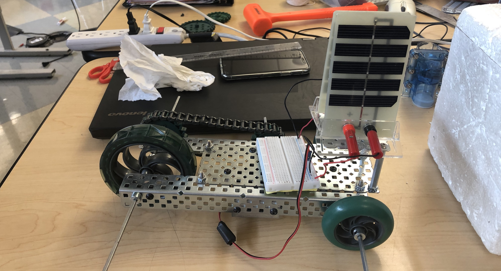
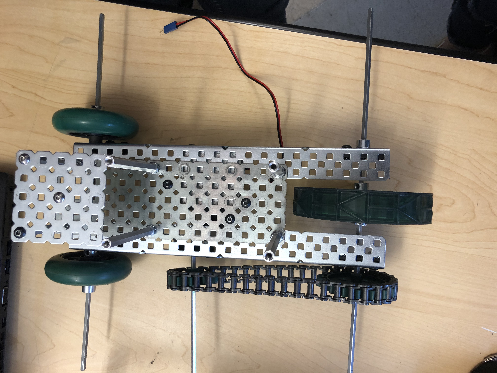
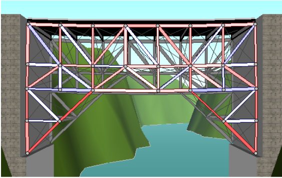
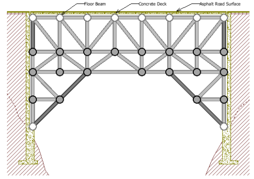
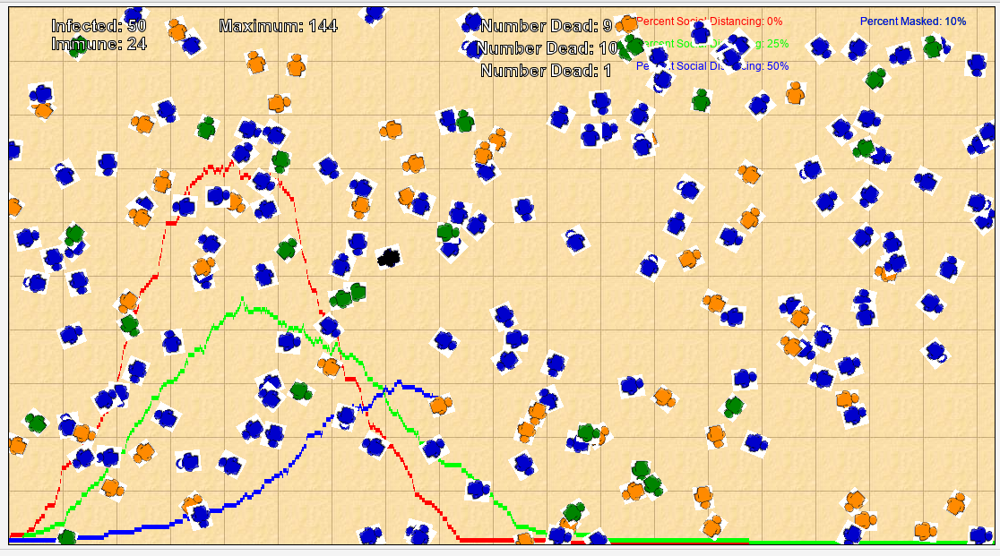
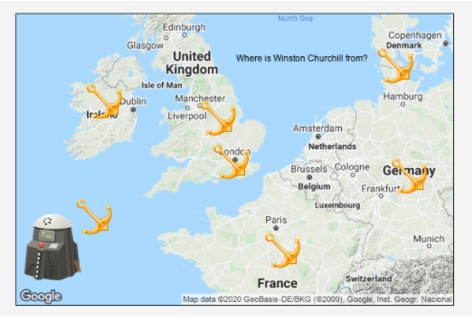

Projects
Earth to Buzz
September 9, 2018
Computer Science Principles
For this project, the main goal was to create or improve a game or story using Scratch. Since this was the first project of the year, I had learned a lot about the process of creating a project. My partner and I chose to create a space-themed game. While we were happy with our end product, there were some obstacles along the way. First, it took some time getting used to working with a partner. We both had different ideas and we had to make multiple compromises. After the initial start, we were able to work well with each other and collaborate efficiently. I learned how to properly document the process and some effective methods of brainstorming. In this project, my partner and I were able to use our personal skills to our advantage. We worked on main code together, but we both focused on areas we were good at. I began to add styles, buttons, sprites, and backgrounds to create the effect of an actual game. My partner worked on troubleshooting and adding new features to the game. Creating our Scratch game helped me learn how to organize and present project documentation. I was also able to see how creativity and computer science can go together.

Hangman Project
Febuary 5, 2019
Computer Science Principles
The objective of this project was to create an online themed hangman game using Python. By this time, my partner and I had already worked together on one project before and we were already accustomed to the process. We decided to make our game Percy Jackson themed. The mystery words we had were all either characters or items from the book series. My partner and I both worked on the code to make the game possible. However, it did take some time to create an initial working game. For us, it was challenging to have a letter show up once the correct letter was guessed. After we had the basic game complete, we began to add new features like a storyline and a given number of guesses. Then we completed our documentation This project taught me the importance of comments. We had to use comments to explain a lot of our code so we could understand it later on and add more changes if we wanted to. Also, we learned how to write proper docstrings that thoroughly explain a function. Overall, I learned how to overcome challenges and how to avoid getting frustrated when the code didn't work the way I wanted it to. Additionally, I learned the importance of sharing and communicating ideas in order to collaborate efficiency to reach our desired goal.
|  |  |
Solar Hydrogen Vehicle
November 18, 2019
Principles of Engineering
The objective of this project was to create a vehicle using Vex parts that would be powered by hydrogen fuel cells and solar cells. The vehicle’s constraints included that it had to be at most 5 by 12 inches and be able to run under multiple configurations. These configurations included one or two hydrogen cells and one or two solar cells. For this project, I worked in a team of four to create a working prototype. The project had many components that needed to be accomplished in a short period. These included the prototype and documentation. My team and I continuously ran into many issues. For example, we had trouble fitting our vehicle within the given constraints. This caused us to start the painstaking process of rebuilding and revising most of the structure. We had also run into the issue of too much weight and friction which prevented the car from moving. My role in this project was primarily the building and testing portions. I contributed ideas on how to secure the cells and motor to the vehicle. I often assisted with building and worked to get the vehicle to fit within the given constraints. With the testing part, I helped make adjustments to the vehicle so that it would be lighter. The constant revisions we made to our prototype before presenting the final solution gave me a better understanding of the design process and how alterations and deviations from the original idea are inevitable. I also understood the importance of brainstorming and having a solid plan before beginning to build. Finally, teamwork was especially exemplified during this project because my entire team often had to work during our free period or lunch.
|  |  |
West Point Bridge
April 13, 2020
Principles of Engineering
The objective of this project was to construct, test, and modify a bridge while using our knowledge about material science, engineering design, and statics. In teams of two, each team member was required to create two viable bridge designs. One final design was chosen with the use of a decision matrix to continue to be modified into the most ideal bridge. The bridges were composed from three materials: carbon steel, high strength low alloy steel, and quenched and tempered steel in either solid or hollow bars. Additionally, factors like the excavation site and bridge supports could also be modified. The final design needed to be under $30,000 and able to support the weight of the truck, concrete deck, main tresses, and supporting beams. My contributions to this project included creating the first two bridge design ideas. I experimented with the excavation site settings and the multiple bridge support features available, such as the pier, cable anchorages, and abutments. Additionally, the documentation for this project included a lot of research. I worked on the Research Summary and the Final Design Summary. Throughout this project, I had also realized the importance of collaboration. My teammate and I learned how to communicate our ideas effectively while we were modifying and choosing our final design. We also learned to collaborate online and outside of class when the school unexpectedly shut down. Teamwork was also an exemplified skill since my partner and I continued to work together even when we weren’t able to collaborate face to face. By the end of the project deadline, we successfully completed the online documentation, final bridge design, and a powerpoint presentation showcasing our solution.

COVID-19 Pandemic Model
August 15, 2020
AP Computer Science Applications
The objective of this project was to extend a model of the COVID-19 pandemic in Greenfoot by adding various factors such as the impact of stay at home orders and the rates of deaths and infection. This model was based upon the one created by Professor Michael Kolling at King's College, London. This project was my first exposure to programming in Java and in Greenfoot. I began this project on my own by deciding what additional factors I wanted to add to the model. I ultimately decided to add the impact of wearing masks and sheltering in place. Individuals that sheltered in place would have had a zero percent chance of getting infected, while those who were wearing mask would have a very slim chance. Additionally, I decided to add the realistic factor of people dying as a result of the virus. In my model, only people who had been infected before could have died from the virus at a mortality rate of five percent. Once a person had died, they would no longer be participating in the program so they couldn't infect others or heal themselves. Throughout this project I faced many difficulties mainly because it was my first time created a full project in Java. I noticed that I had to be patient with myself and give myself enough time to thoroughly understand the code before moving on. One major issue I faced was making it so that individuals who had sheltered in place or who died were no longer participating in the program. In order words, they should not longer be actors in the world because I didn't want them to get infected, infect others, or heal. However, with a little time spent adjusting my initial code, I was able to fix this issue by removing actors from the world once they stayed at home or died. Although I was working on my own, I had learned the importance of organization and project planning. I started by breaking down the large project into smaller tasks with a set schedule so I would be able to stay on track and finish the project in time. This is definitely something I improved upon after completing my first project in AP Computer Science Applications.

Educational Game Project
December 2, 2020
AP Computer Science Applications
The objective of this project was to brainstorm, develop, and test an educational and entertaining game in Java. Using what we had learned during the semester, we utilized concepts in Java such as conditionals, loops, classes, and objects to build an advanced game that could be used to convey information or teach a concept. In our case, my team of four decided to go with a trivia game that tested the user on general knowledge as well as geography. This was done through the implementation of the Google Maps API in Greenfoot. We began the project by brainstorming potential ideas for a game. We evaluated our topic choices on factors such as creativity, feasibility, and difficulty through a decision matrix. We wanted our game to be unique, but also realistic within the given timeline. It was also important that we included concepts we learned in class. My contributions in this project included created a backstory that would keep the user engaged in the game. I also helped implement the trivia questions, and tested the prototype numerous times to ensure that it was working the way we wanted it to. I was able to fix a bug when certain answers were declared to be correct, even if they were not. Additionally, I also helped create code that would cause the questions to appear in the same order each time and wouldn't repeat after the user had already answered them. This was to make our finished product look more polished and it also helped with the troubleshooting process. My final major contribution included working on the documentation. Throughout my experiences with the project, I learned many important skills while also strengthening my knowledge in Java. But, most importantly, I understood the importance of team cooperation. Especially since this project was through virtual learning during the COVID-19 pandemic, my group and I had to find ways to communicate our ideas effectively since we weren't able to talk in person. We also had difficulty collaborating on a single Greenfoot project. We solved these issues by scheduling lots of time outside of class either by texting or through Zoom calls. This extra time really helped us develop our ideas further and polish our final product so that it was ready to be used by others.